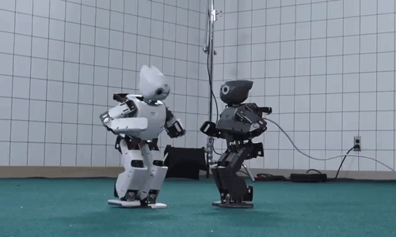

Você sabia?
O Japão e a Robótica
O Japão é um dos países que mais investem em robôs no dia a dia. O Japão é um dos países mais avançados do mundo quando se trata de robótica. O investimento em tecnologia e inovação faz parte da cultura japonesa, e os robôs estão cada vez mais presentes no cotidiano da população. Desde a década de 1970, o país se destaca na automação industrial, principalmente na fabricação de automóveis e eletrônicos. Hoje, o uso de robôs vai muito além das fábricas.De onde vem a palavra "robô"?
A palavra "robô" tem origem na língua tcheca. Ela foi usada pela primeira vez em 1920, na peça de teatro R.U.R. (Rossum's Universal Robots), escrita pelo autor tcheco Karel Čapek. Na obra, os “robôs” eram seres artificiais criados para trabalhar no lugar dos humanos. O termo vem da palavra "robota", que significa "trabalho forçado" ou "servidão". A escolha do nome refletia o papel dos robôs como trabalhadores incansáveis, feitos para realizar tarefas pesadas ou repetitivas.Com o tempo, o conceito de robôs evoluiu — e hoje eles estão presentes em áreas como a indústria, saúde, educação, entretenimento e até no convívio social.Robôs que andam, correm... e dançam!
A tecnologia robótica avançou tanto que hoje já existem robôs capazes de se mover como seres humanos. Alguns modelos conseguem andar, correr, subir escadas e até dançar com ritmo e coordenação impressionantes! Um exemplo famoso é o Atlas, da empresa americana Boston Dynamics, que realiza saltos mortais, obstáculos e coreografias complexas. Outro é o robô humanoide Pepper, que reconhece emoções humanas e interage com as pessoas de forma divertida e simpática. Esses avanços combinam áreas como inteligência artificial, visão computacional, mecânica e controle de movimentos, e mostram como os robôs estão se aproximando cada vez mais do comportamento humano.